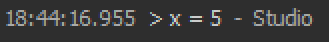
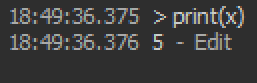
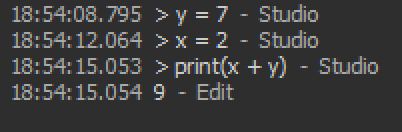

Chapter 2: Data and Variables
This chapter will introduce the basic types of data there are, and how to represent them in Lua and Luau.
The basic types of data are numbers, characters, strings, and Booleans.
Numbers
Numbers can be divided into two types: integers and floats. Integers are basically the "whole numbers" that you've learned
in elementary school: -2, -1, 0, 1, 2, 56, 79, and so on. A float is essentially a decimal number: 5.0, 6.79, 4.20, and so on.
Floats themselves are much more complicated than that, so watch this video
if you want to learn more about them.
Quick Exercise: Print out each of the numbers listed above.
Characters and Strings
A character is a single letter, like 'A', 'B', 'c', 'd', '$', '?', and anything else you can type. A string is a bunch of characters strung together,
hence the name "string." In other words, strings are entire words or sentences, or any other collection of characters. Some examples
of strings are: "Hello, World!", "jhfsdjkf9832", and "Bruh."
Quick Exercise: Classify the following values: 1, '1', "One"
Booleans
Booleans might sound weird if you've never heard them before, but they're basically just true or false (note: they are NOT the literal strings "true" and "false").
For example, the statement "1 + 1 = 2" is a true statement, but "1 + 2 = 6" is false. These are Booleans (fun fact: they are named after
George Boole.).
Quick Exercise: Classify the following values statements as either true or false:
- The Earth is in space.
- 2 + 2 = 5
- Luau is used to program ROBLOX games.
- The Olympics are held every four years.
- The moon is not real.
Variables
We just went through a bunch of data types, but how would we actually represent and store them in Luau? The answer is variables.
You might have heard about variables in your elementary school math classes: If 4x + 3 = 13, then find the value of x. Variables in programming are somewhat
similar; they have a name, and they represent a certain value.
The basic format for declaring a variable in Luau is: name = value. Let's try out some examples in the ROBLOX Studio command line:

Here, we've created a variable named "x", and assigned it the value of 5 (an integer!).
Quick Exercise: Try storing other types of data in x, like 6.7, "Hello", and true.
Note that there are a few constraints on what you can name a variable; you can only use letters, underscores, and numbers, but it must not
start with a number.
Quick Exercise: Which of the following are valid variable names?
- Hi
- y
- _he11o
- 45num
- my var
- my_var
The cool thing about variables is that we can now reference them just by using their name:

Since we previously stored the integer 5 in our variable named x, doing print(x) basically does print(5).
Quick Exercise: Create a variable, store a string inside it, and then print the variable.
We can also do math using variables:

In the code above, we defined y to be 7, and x to be 2. So doing y + x was the same thing as doing 7 + 2, which is 9.
Exercises:
- Classify the following values: true, 1, "false", "one", 5 + 7, (5 + 7) / 89, '5'
- Define the variables x to be "Hello", and y to be "Bye". Store their concatenation in a variable named z. What is the type of z?
- Let x = 5, and let y = 9. Let z = x + y. Consider the statement "z is equal to 15." Is this true or false?
- You can use concatenation with variables: if we let s = "Bob", then
print("Hello "..s) prints out "Hello Bob". Store your name in a variable, and use concatenation
to print out your own greeting.
- Let b = "true". Consider the following statement: "The variable b is a boolean." What Boolean value does it have?
- Try the following in the command line: define x to be 5, and y to be x. Then change x to be 8. What happens if you print out y? Can you explain why?